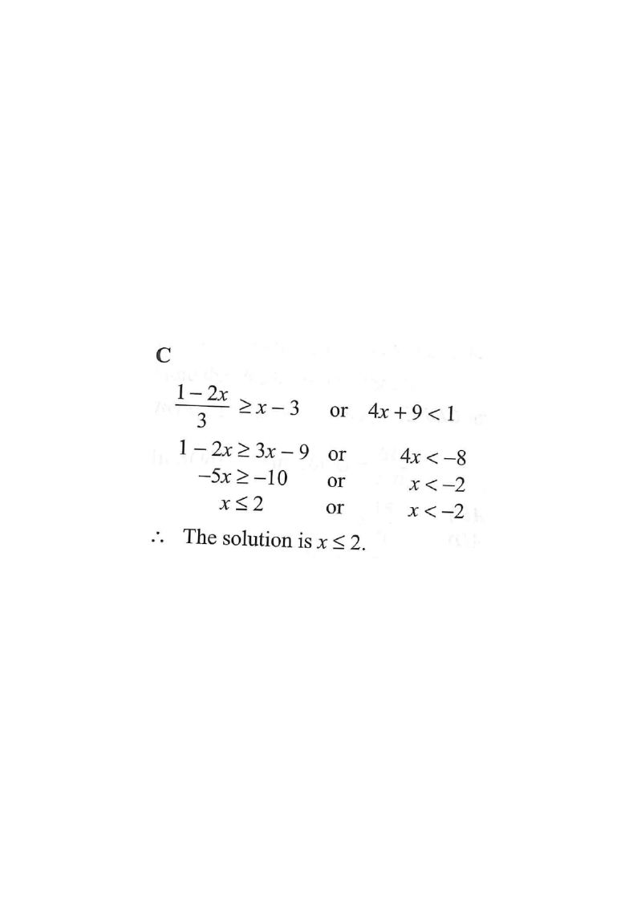

Topic 9 · Inequalities and Linear Programming — Solving a compound "or" inequality
Scroll the solution to highlight each step on the number line.
The solution of $\dfrac{1-2x}{3} \ge x-3 \quad \text{or} \quad 4x+9 < 1$ is
A. $\; x \le 2$
B. $\; x < -2$
C. $\; x \ge 2$
D. $\; \text{all real numbers } x$

The statement is a compound inequality joined by "or". A value of $x$ satisfies the whole statement if it satisfies at least one of the two inequalities.
So we solve each separately, then take the union of the two solution sets.
Multiply both sides by $3$ (positive,
so the inequality sign is unchanged):
Divide both sides by $-5$. Since we divide by a negative number,
the inequality sign flips:
First inequality gives $\;x \le 2$. Second gives $\;x < -2$.
Since $x < -2$ is contained inside $x \le 2$ (every $x<-2$ also satisfies $x\le 2$),
the union is simply:
The solution set $x \le 2$ corresponds to option A.
Hint: check the boundary — $x=2$ is included (closed dot) and $x=-2$ is not needed since it is already inside.Question. Solve \(\dfrac{3-4x}{2}\le x-1\) or \(2x+7<3\).